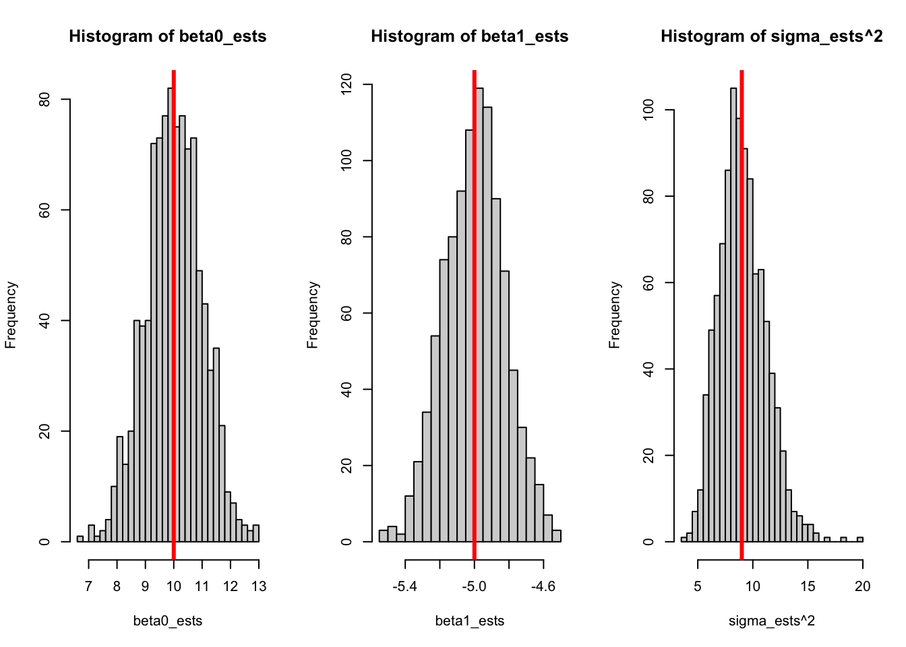
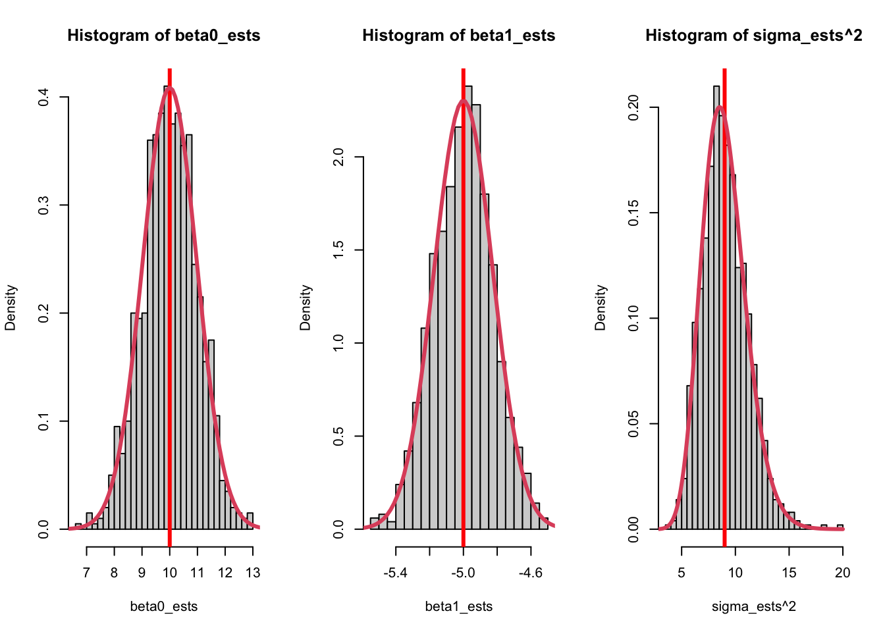
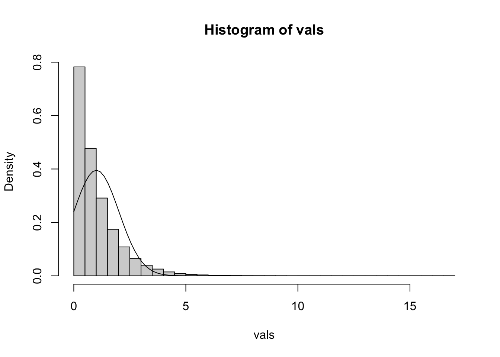
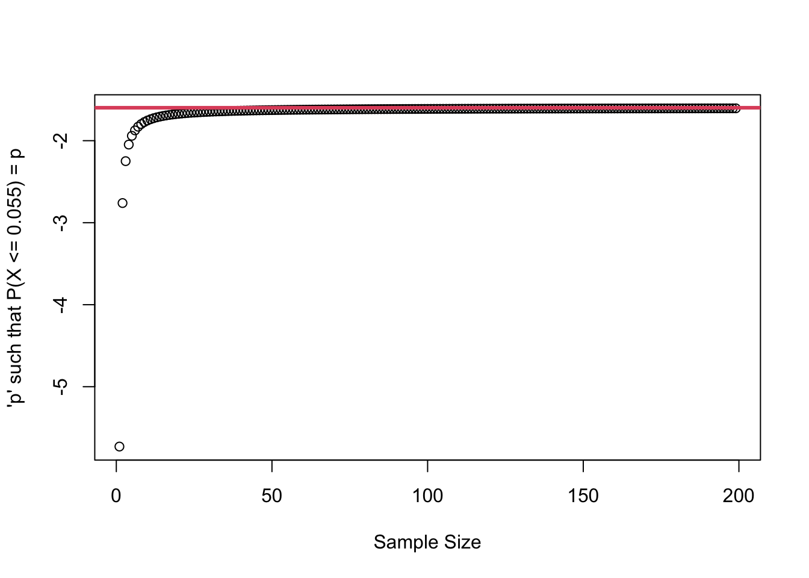

The following code will simulate from a linear model 1000 times. This is not the most efficient way to do this, but it’s more clear what’s going on and we’re working with some pretty small numbers.
Show the code
set.seed(2112)n <-40beta0 <-10beta1 <--5sigma <-3x_vals <-runif(n, 0, 10)# Sets up an empty vector# (double means double precision, so it allows non-integers;# it is not doubling the value.)beta0_ests <-double(n)beta1_ests <-double(n)sigma_ests <-double(n)for (i in1:1000) { y <- beta0 + beta1 * x_vals +rnorm(n, 0, sigma) mylm <-lm(y ~ x_vals) beta0_ests[i] <-coef(mylm)[1] beta1_ests[i] <-coef(mylm)[2] sigma_ests[i] <-summary(mylm)$sigma}par(mfrow =c(1, 3))hist(beta0_ests, breaks =30)abline(v = beta0, col ="red", lwd =3)hist(beta1_ests, breaks =30)abline(v = beta1, col ="red", lwd =3)hist(sigma_ests^2, breaks =30)abline(v = sigma^2, col ="red", lwd =3)

Every time we generate new data, we get a different model! On average we’re getting the right model, but it’s never exactly equal. In addition, there’s a nice bell-shaped curve centered at the true value. In this class, we’re interested in both of these things - whether each model is approximating the true value, as well as how much it varies around that value.
It’s really nice to know that the average value of the estimates is equal to the true value. This is great! But we’re statisticians - at the very least we want variance, if not a full distribution!
But what’s the distribution?
Show the code
par(mfrow =c(1, 3))hist(beta0_ests, breaks =30, freq =FALSE)abline(v = beta0, col ="red", lwd =3)Sxx <-sum((x_vals -mean(x_vals))^2)curve(dnorm(x, 10, sigma *sqrt(sum(x_vals^2)/ (n * Sxx))), from =5, to =15, add =TRUE, col =2, lwd =3)hist(beta1_ests, breaks =30, freq =FALSE)abline(v = beta1, col ="red", lwd =3)curve(dnorm(x, -5, sigma/sqrt(Sxx)), from =-10, to =0, add =TRUE, col =2, lwd =3, n =500)hist(sigma_ests^2, breaks =30, freq =FALSE)abline(v = sigma^2, col ="red", lwd =3)curve(dchisq(x * (n -1) / sigma^2, df = n -1) * (n -1) / sigma^2, from =1, to =20, add =TRUE, col =2, lwd =3, n =500)

I was able to draw a curve that perfectly matches the distribution of the simulated data based on theory. You won’t yet know what each of the distributions are, but you can see that all of the curve() function calls rely only on the true values.
The \(x\) values are also used in the calculation, which is not as important as it sounds. In regression, we assume that the \(x\) values are fixed (or could have been known ahead of time). You may have noticed that I simulated \(x\) values, but this was done once and it was outside the for loop.
Take-Home Lessons
All of the parameters have sampling distributions!
The variance of the sampling distributions is important
The distributions are well known to statisticians
Soon you’ll know them too!
Simulations let us “touch” theory!
Simulations cannot “prove” anything!
In this course, we’ll generally follow the pattern of learning theory, verifying via simulation, then applying it to real-world data. The theory is the point of the course, with the hopes that you’ll either learn more advanced theory or have the tools you need to apply it. Simulation is an intermediate step that helps you fully understand the assumptions that you’re making!
1.3 Linear Model Example
mtcars data
We’ll make great use of the mtcars data set in this course! We’ll just focus on what’s immediately relevant, and get to know it better a little later on.
For now, here’s the important bits:
mpg: Miles per Gallon (fuel efficiency)
hp: The horsepower of the car
Measures how many horses the car would be able to take in a fight
From the plot, it looks like a linear model might be appropriate (although it might not be perfect).
In the simulations, we had a perfect situation: the data were simulated from a perfectly linear relationship and the residuals were perfectly iid normal. In practice, we have to check this before we can do any sort of analysis! In other words, we need our real-world data to come to us as if they were simulated from a perfect model.
Assumptions and Residual Diagnostics
All statistical models require assumptions. Without assumptions, all we know is that the data we got have a set of properties, such as the mean and variance. With assumptions, we are able to say something about the population! Of course, this opens us up to the risk of being wrong!
The assumptions in statistics exist because of the calculations we do. We don’t just arbitrarily assume that the residuals are normal, we use this when we find the line of best fit; we can’t find the line of best fit without making some sort of assumption about the residuals.
In linear regression, the assumptions are as follows:
Assumptions:
There’s actually a linear relationship
Check “Residuals versus Fitted”
The residuals are normally distributed
Check “QQ Norm”
The variance is constant
Check “Scale-Location”
The residuals are independent
Check the sampling procedure!
Show the code
par(mfrow =c(2, 2))plot(lm(mpg ~ hp, data = mtcars))
Everything else in this semester is a direct result of these four assumptions. It’s kind of amazing, isn’t it? These four sentences, none of which are longer than six words, can form the basis of an entire semester!
To assess the assumptions, the first thing to know is this: There should be no patterns in the residual plots. The word “residual” means “what’s left behind”. If there’s a pattern left behind after fitting a linear model, then there was some violation of linearity in the model!
From the data, it looks like there’s a pattern in the residuals versus fitted plot, but the other plots all look fine to me. We’ll explore this in great detail throughout the semester!
1.4 Confidence Intervals
General Idea: Terminology
Consider the statistic\(t = \frac{\hat\theta - \theta_0}{se(\hat\theta)}\) (a statistic is any number that can be calculated from data alone).
\(\theta\) is the “““true”“” value of the parameter.
Unknown, unknowable, not used in formula - hypothesize \(\theta = \theta_0\) instead.
\(\hat\theta\) is our estimator of \(\theta\).
Estimator is a function, like \(\hat\mu = \bar X =(1/n)\sum_{i=1}^nX_i\).
\(X\) is a random variable.
Estimate is a number, like the calculated mean of a sample.
\(se(\hat\theta)\) is the standard error of \(\hat\theta\).
If we had a different sample, the value of \(\hat\theta\) would be different. It has variance.
Standard error: the standard deviation of the sampling distribution.
General Idea: Distributional Assumptions
Consider the quantity (not statistic) \(t = \frac{\hat\theta - \theta}{se(\hat\theta)}\).
If we assume \(X\sim N(\mu, \sigma^2)\), then \(\hat\theta = \bar X\) is an unbiased estimate of \(\theta\) on \(\nu=n-1\) degrees of freedom and \(t \sim t_\nu\)
From this, we can find the lower and upper \(\alpha/2\)% of the \(t\) curve.
\(t_\nu(\alpha/2)\) is the lower \(\alpha/2\)%.
i.e., if \(\alpha = 0.11\), then it’s \(t(\nu, 0.055)\), the lower 5.5% area.
\(t_\nu(1 - \alpha/2)\) is the upper \(\alpha/2\)%.
Since \(t\) is symmetric, \(t_\nu(1 - \alpha/2) = -t_\nu(\alpha/2)\).
The CI is all values \(\theta_0\) that would not be rejected by the null hypothesis \(\theta = \theta_0\) at the \(\alpha\)% level.
Since \(t_\nu(1 - \alpha/2) = -t_\nu(\alpha/2)\), our 89% CI is \(\hat\theta \pm se(\hat\theta)t_\nu(5.5)\).
What is the Standard Error?
If we’re estimating the mean, \(\hat\theta = (1/n)\sum_{i=1}^nX_i\), where we assume \(X_i \stackrel{iid}{\sim} N(\mu, \sigma)\). \[
E(\hat\theta) = E\left(\frac{1}{n}\sum_{i=1}^nX_i\right) = \frac{1}{n}\sum_{i=1}^nE(X_i) = \frac{n\mu}{n} = \mu
\] From this, we see that the mean is an unbiased estimator! (This is nice, but not required.)
\[
V(\hat\theta) = V\left(\frac{1}{n}\sum_{i=1}^nX_i\right) = \frac{1}{n^2}V\left(\sum_{i=1}^nX_i\right) \stackrel{indep}{=} \frac{1}{n^2}\sum_{i=1}^nV(X_i) = \sigma^2/n \stackrel{plug-in}{=} s^2/n
\] where \(s^2\) is the estimated variance since we cannot know the true mean.
Note that \(s\) is a biased estimator for \(\sigma\).
Let \(S_n\) be a random variable denoting the sample standard deviation. Note that \(E(S_n^2) = \sigma^2\). What’s \(E(S_n)\)?
A tricky way to find \(E(S_n)\) is to start with \(V(S_n)\). We know that \(V(S_n) = E(S_n^2) - (E(S_n))^2\), therefore \(E(S_n) = \sqrt{E(S_n^2) - V(S_n)}\). Note that \(E(S_n^2) = \sigma^2\), so this becomes \(E(S_n) = \sqrt{\sigma^2 - V(S_n)}\). Already, we can see that \(E(S_n) \ne \sigma\).
Assuming that the variance is strictly larger than 0, then removing it from the equation makes the right hand side larger, i.e. \(\sqrt{\sigma^2 - V(S_n)} < \sqrt{\sigma^2} = \sigma\). If we replace \(\sqrt{\sigma^2 - V(S_n)}\) by \(\sigma\), the right hand side is larger than the left, i.e. \(E(S_n) < \sigma\).
Putting it all together: t CI for a mean
Assuming \(X\sim N(\mu, \sigma^2)\), we get that \(\bar X\sim N(\mu, s^2/n)\).
A \((1 - \alpha)\)%CI for \(\mu\) is: \[
\bar x \pm t_{n-1}(\alpha/2)s/\sqrt{n}
\]
CI for Variance
From before: \(\frac{(n-1)s^2}{\sigma^2} \sim \chi^2_n\).
Let \(\chi^2_n(0.055)\) be the lower 5.5% quantile, \(\chi^2_n(0.945)\) be the upper.
For homework, find the CI from: \[
\chi^2_n(0.055) \le \frac{(n-1)s^2}{\sigma^2} \le \chi^2_n(0.945)
\] Note that \(\chi^2_n(0.055)\ne-\chi^2_n(0.945)\).
In the standard normal distribution, \(\Phi(0.055)\) is the usual notation for the CDF evaluated at 0.055, i.e. you tell it that you want 5.5% of the data below a certain point on the x-axis, and it tells you that point. For the standard normal distribution, it is always true that \(\Phi(\alpha) = - \Phi(1 - \alpha)\) since it is symmetric around 0. This is not the case for the Chi-Square distribution.
Take-Home Lessons
CIs are all values that would not be rejected by a hypothesis test.
The null hypothesis determines the distribution of the test statistic, which allows us to find the CI.
CIs are found based on distributional assumptions
Mathematical Statistics is a different course, unfortunately.
Standard errors are everywhere!
1.5 Distributions (for reference)
In this section, we’ll just lay out some basic facts about some distributions. I try to also justify why these facts are important for this course! Otherwise, the following examples should act as a reference, and won’t be tested on an exam or assignment.
The normal distribution is the foundation for pretty much everything that we’re going to do in this class. In general, things aren’t normally distributed, but the assumption is very robust and works out in a lot of cases.
In this lecture we’re going to build up an important result that we’ll use frequently. In particular, we want some background into why the F and \(t\) distributions show up so often!
The notation \(f(x; \nu)\) means “function of \(x\), given a value of \(\nu\).”
Completely determined by \(\nu\)
As \(\nu\rightarrow\infty\), this becomes \(N(0,1)\).
\(\nu>60\) is pretty much normal already.
For \(\nu<\infty\), \(t\) has wider tails than normal.
The \(\chi^2\) distribution - variances
If \(Z_1, Z_2, ..., Z_k\) are iid \(N(0,1)\), then \(\chi^2_k = \sum_{i=1}^kZ_i^2\) has a chi-square distribution on \(k\) degrees of freedom. \[
f(x; k) = \frac{1}{2^{k/2}\Gamma(k/2)}x^{k/2-1}e^{-x/2}
\]
As \(k\rightarrow\infty\), \((\chi^2_k-k)/\sqrt{2k}\stackrel{d}{\rightarrow} N(0,1)\).
That is, for large \(k\) this can be approximated by a normal distribution.
Very related to the variance
\((n-1)s^2/\sigma^2\) follows a \(\chi^2_n\) distribution.
Note that, if \(X_i\sim N(\mu, \sigma)\), then \(\frac{X_i - \mu}{\sigma} = Z = N(0,1)\) and:
So \(n-1\) times the estimated variance divided by the true variance does follow a Chi-square distribution. There’s some advanced math with distributions going on here; the takeaway message is that the variance follows a Chi-Square distribution because\(X_i\) are assumed to be normal!
The \(t\) distribution in practice
If the sampling distribution of the sample mean is normal, i.e. \(\bar X\sim N(\mu, \sigma)\), then:
\(\dfrac{S^2(n-1)}{\sigma^2} = \chi^2_{n-1} \implies S / \sigma = \sqrt{\chi^2_{n-1}/(n-1)}\), and
\(\dfrac{\bar X - \mu}{\sigma / \sqrt{n}} = N(0,1)\)
The following math will not be on the exam! This is graduate level math. The rest of this course is going to focus on much simpler ideas! The takeaway message is that \((\bar x - \mu)/(\sigma/\sqrt{n})\) follows a \(t\) distribution because the \(X_i\) are assumed to be normal.
With a little trickery,
\[
\dfrac{\bar X - \mu}{S / \sqrt{n}} = \dfrac{\bar X - \mu}{S / \sqrt{n}}\cdot\dfrac{\sigma}{\sigma} = \dfrac{\bar X - \mu}{\sigma / \sqrt{n}}\cdot\dfrac{1}{S / \sigma} = \dfrac{Z}{\sqrt{\chi^2_{n-1}/(n-1)}} = t_{n-1}
\]
In other words, if the sampling distribution is normal, then \(\dfrac{\bar x - \mu}{s / \sqrt n}\) is from a \(t_{n-1}\) distribution!!!
The \(F\) distribution - ratio of variances
If \(S_1\) and \(S_2\) are independent \(\chi^2\) distributions with degrees of freedom \(\nu_1\) and \(\nu_2\), then \(\frac{S_1/\nu_1}{S_2/\nu_2}\) follows an \(F_{\nu_1,\nu_2}\) distribution. \[
f(x; \nu_1, \nu_2) = \frac{\Gamma\left(\frac{\nu_1+\nu_2}{2}\right)\left(\frac{\nu_1}{\nu_2}\right)^{\nu_1/2}}{\Gamma(\nu_1/2)\Gamma(\nu_2/2)}\frac{x^{\nu_1/2-1}}{(1 + x\nu_1/\nu_2)^{(\nu_1+\nu_2)/2}}
\]
If \(s_1^2\) and \(s_2^2\) are the sample-based estimates of the true values \(\sigma_1^2\) and \(\sigma_2^2\), then \(\frac{s_1^2/\sigma_1^2}{s_2^2/\sigma_2^2}\) follows an \(F_{\nu_1, \nu_2}\) distribution.
Under \(H_0\), \(\sigma_1=\sigma_2\), so we don’t need the true values.
Note: \(s_1^2\) is calculated from \(S_1^2/\nu_1\).
One last time: We assume that the \(X_i\) are normal, and all of the other distributions fall into place.
In the rest of the course, we’re assuming that the residuals of a linear model follow a normal distribution. Every other distribution we see is a result of this, we are not making further assumptions. When we do an F test for the ratio of variances, we’re not assuming an F distribution - we’re assuming normal residuals, and this results in an F distribution!
1.6 Homework Problems
Textbook questions for chapters 1-3 are grouped together at the end of chapter 3. There are no relevant excercises yet. However, it’s a good time to review some distributions with simulations!
Find the following values using R:
The probability of a standard normal value less than -1.
The probability of a standard normal value less than -1 or greater than 1.
The 0.055 percentile of a standard normal distribution.
The 0.945 percentile of a standard normal distribution.
The 0.945 percentile of a Chi-Square distribution of 30 degrees of freedom.
The 0.945 percentile of an F distribution of 30 and 32 degrees of freedom.
The probability of an \(F_{30, 32}\) value larger than 1.5
Solution
# a.pnorm(-1)
[1] 0.1586553
# b.pnorm(-1) + (1-pnorm(1))
[1] 0.3173105
# b. (alternative solution)2*pnorm(-1)
[1] 0.3173105
# c.qnorm(0.055)
[1] -1.598193
# d.qnorm(0.945)
[1] 1.598193
# e.qchisq(0.945, df =30)
[1] 43.31057
# f. qf(0.945, df1 =30, df2 =32)
[1] 1.78572
# g.1-pf(1.5, df1 =30, df2 =32)
[1] 0.1310077
Calculate an 89% CI for the mean eruption time of the Old Faithful geyser.
The data are stored in the built-in R data set faithful, shown below. The eruption times are faithful$eruptions
Also make a plot - is a CI meaningful in this case?
Also find a CI for the variance of the eruption times.
data(faithful)
Solution
xbar <-mean(faithful$eruptions)s <-sd(faithful$eruptions)n <-length(faithful$eruptions)# 89% CI (one liner)xbar +c(1, -1) *qt(0.055, df = n -1) * s /sqrt(n)
[1] 3.376815 3.598751
plot(faithful)
Note that t.test(faithful$eruptions, conf.level = 0.89) includes the exact same CI in its output.
From the plot, it looks like the mean is not a reasonable measure of the average eruption times! There are clearly two groups, i.e. the distribution is bimodal. It would be better to separate the two clusters and make CIs for the means in each of those.
However, the sampling distribution of the sample mean is likely normal because the sample size is large enough, so even though the mean is not a valid measure because of what we know from the context of the data, there’s no issue with the CI. If we were to repeat these measurements many many times, 89% of the sample means that we get will be in our 89% CI. The CI is valid, the mean is just not meaningful here.
The CI for the variance can be found as follows:
xbar <-mean(faithful$eruptions)s <-sd(faithful$eruptions)n <-length(faithful$eruptions)# I've included the estimate for reference.sd_ci <-c("low"=qchisq(0.055, df = n -1) * s^2/ (n -1),"estimate"= s^2,"high"=qchisq(0.945, df = n -1) * s^22/ (n -1))sd_ci
low estimate high
1.129010 1.302728 20.925488
sqrt(sd_ci)
low estimate high
1.062549 1.141371 4.574439
We are 89% confident that the true population variance is between 1.1290 and 20.925. This corresponds to standard deviations of 1.0625 and 4.5745, respectively.
The code below demonstrates one of the topics covered in this lecture. Which is it?
The x-values are assumed to be fixed; the errors are drawn at random to produce our sample.
The F distribution is the ratio of two variances, divided by their respective true variances.
True or False: As \(n\) approaches infinity, the sampling distribution of the sample variance approaches a normal distribution?
Solution
Let’s start small. If \(n = 3\), then the variance clearly does not follow a normal distribution. Instead, it is a transformation of a Chi-Square distribution. What happens as n gets larger? What if the true sd gets smaller? What if we use a uniform distribution, or something else?
# Change me to a different number!n <-3# Change me to a different number!true_sd <-1vals <-double(100000)for (i inseq_len(length(vals))) {# Change me to a different distribution! new_sample <-rnorm(n, 0, true_sd) vals[i] <-var(new_sample)}hist(vals, freq =FALSE, breaks =40)curve(dnorm(x, mean(vals), sd(vals)), add =TRUE)

With a little investigation, the sample variance does indeed approach normality! The sample variance is something like an average - it’s the average of the squared deviations - so the CLT applies.
Write a simulation to show that \((n-1)s^2/\sigma^2\sim \chi^2_n\). You may use the simulation from the previous question as a starting point.
Solution
You will know you’ve got the right answer when the line added by curve(dchisq(x, n), add = TRUE, col = 2, lwd = 3) fits the histogram of your simulated values!
Show that the square of a \(t_\eta\) distribution is equal to an F distribution on 1 and \(\eta\) degrees of freedom. Use the following facts:
\(t_\eta\) is defined as \(\frac{Z}{\sqrt{\chi^2_\eta/\eta}}\).
For any variable \(X\), \(X^2 = \sum_{i = 1}^1X^2 / 1\)
Note that this sort of question will not be on the test, but the result is important for later!
Solution
First note that \(Z^2\) can be written as \(Z^2 = \sum_{i=1}^1Z^2/1 = \chi^2_1/1\), that is, a squared normal distribution is equal to the sum of a single squared normal distribution divided by it’s degrees of freedom (which is 1), which is exactly a Chi-Square distribution.
norm_quantile <-qnorm(p =0.055)t_quantile <-qt(p =0.055, df = (2:200) -1)plot(x = (2:200) -1, y = t_quantile,ylab ="'p' such that P(X <= 0.055) = p",xlab ="Sample Size")abline(h = norm_quantile, col =2, lwd =3)

Solution
As the sample size increases, the \(t\) distribution approaches a normal distribution. The y axis shows the critical value for an 89% CI from a t distribution, and as we approach infinity (or even 60 or so) it becomes the same as the critical value of a normal CI. However, there is still a slight difference.
We could use a normal distribution to approximate the t distribution when n is large, but we may as well just keep using the t distribution. It’s the correct one and it’s still easy to use.